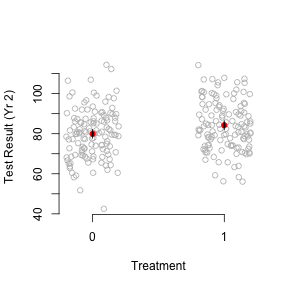

[C]onsider a stratified estimator that controls for \(Z_i\) by
partitioning the sample by values of \(Z_i\), then
taking the difference in treated and control means within each of these strata, and then
combining these stratum-specific estimates with a weighted average, where we weight each stratum contribution by the share of the \(P\) in each stratum
This setup gives an estimand of \(29.33\). This is not the ATE (20).
That is, we've derived the population estimand under this stratified estimator.
And we already assumed a lot of common issues away (balanced design, constant effects)
If we knew population sizes within principal strata, would this help?
Now for something completely different
Now we're going to switch gears to regression and covariate adjustment.
We'll also be getting some examples of how to work with linear models (in R)
This will include some consideration of partial regression.
All of which should make your homework easier to work with.
Covariate Adjustment in sampling
Lin, Winston. (2013) "Agnostic Notes on Regression Adjustments to Experimental Data: Reexamining Freedman's Critique" Annals of Applied Statistics. 7(1):295-318.
Imagine that we are biologists. We are interested in leaf size.
Finding the size of leaves is hard, but weighing leaves is easy.
Key insight is that we can use auxilliary information to be smarter:
Sample from leaves on a tree.
Measure their size and weight.
Let \(\hat{y}_s\) be the average size in the sample.
Let \(\hat{x}_s\) be the average weight in the sample.
Population averages drop the subscript.
We know that \(\hat{y}_s\) unbiased and consistent for \(\hat{y}\)
But we have extra information!
We also have \(\hat{x}\) (all the weights)
This motivates the regression estimator: \(\hat{\bar{y}}_{reg} = \hat{y}_s + \beta(\hat{x}-\hat{x}_s)\)
We get \(\beta\) by a regression of leaf area on weight in the sample.
Connection to Multiple Regression
In the case of OLS for the analysis of experiments, we have nearly the same setup.
Only difference is that we are sampling for both treatment and control.
This means that we must adjust both groups separately.
This motivates the use of covariate-treatment interactions.
Remember! Freedman (2008) showed that regression is biased and can be inconsistent for an experimental parameter in the case when interactions aren't included.
This is something to consider in many different situations. There's no reason to expect treatment and control groups to exhibit identical effects (even ones that are orthogonal to the causal parameter of interest)
This is just a particular sort of omitted variable bias, which you should already be familiar with.
Covariate Adjustment in Experiments
Now imagine we are social scientists (hopefully this isn't hard)
We are interested in the effects of a binary treatment on education, measured by a test.
Let's set up a simulation.
250 students. Ten classes of 25 students each. Observed over two years.
First year has half good teachers and half bad.
We want to estimate the effect of the intervention in year 2.
Treatment is assigned randomly by individual
Note: This setup usually demands an accounting of clustering, which I'm ignoring. Maybe I'll bring it back later in the semester when we discuss SUTVA.
Simulation
# Variables which govern the size of the simulation (and our causal effects)
nclass <-5
nstudent <-25
Eff <-5
EffSD <-3# Simulate dataset.seed(1977)
Yr1ClassType <-rep(c(1, 0), nclass *nstudent)
Yr2ClassType <-sample(Yr1ClassType, replace =FALSE)
Yr1Score <-rnorm(2 *nclass *nstudent, 76 +Yr1ClassType *5, 9)
# Fixed margins randomization
Trt <-sample(Yr1ClassType, replace =FALSE)
# There is an independent effect of class type in each year Variance is# different across class types in year 2
CtlOutcome <-rnorm(2 *nclass *nstudent, Yr1Score +Yr2ClassType *3, 9 -Yr2ClassType *4)
# Treatment effect is random, but with expectation Eff
Yr2Obs <-CtlOutcome +Trt *rnorm(2 *nclass *nstudent, Eff, EffSD)
summary(lm(Yr2Obs ~Trt))$coefficients[2, ]
## Estimate Std. Error t value Pr(>|t|)
## 4.307282 1.558184 2.764296 0.006133
## Estimate Std. Error t value Pr(>|t|)
## 3.5206647 1.0064194 3.4982082 0.0005554
# *IF* we trust the model-based SEs, then we could pull SEs for a TE# estimate with:summary(lm(Yr2Obs ~Trt))$coefficients["Trt", 2]
## [1] 1.558
Plot Data
plot(jitter(Trt), Yr2Obs, axes = F, xlab ="Treatment", ylab ="Test Result (Yr 2)",
col ="grey")
axis(2)
axis(1, at =c(0, 1))
# Calculate quantities for plotting CIs
mns <-tapply(Yr2Obs, Trt, mean)
# SEs could also be pulled from the linear models we fit above with:
ses <-tapply(Yr2Obs, Trt, function(x) sd(x)/sqrt(length(x)))
points(c(0, 1), mns, col ="red", pch =19)
# Note the loop so that I only write this code once
for (tr in unique(Trt)) {
for (q in c(0.25, 0.025)) {
upr <-mns[as.character(tr)] +qnorm(1 -q) *ses[as.character(tr)]
lwr <-mns[as.character(tr)] -qnorm(1 -q) *ses[as.character(tr)]
segments(tr, upr, tr, lwr, lwd = (-4/log(q)))
}
}

Partial Regression
Can we make that plot a little more friendly?
Let's residualize our outcome based on scores in the first period. This should remove a substantial amount of the variance in the outcome.